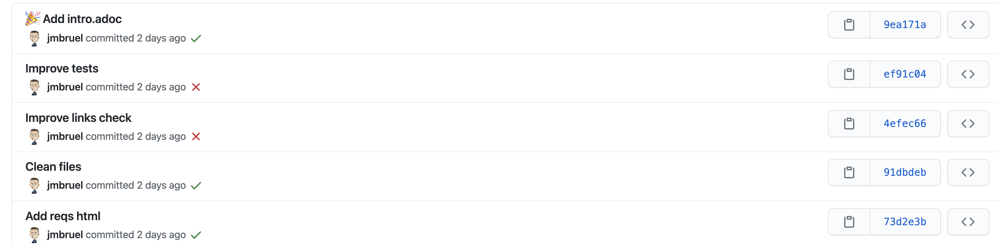
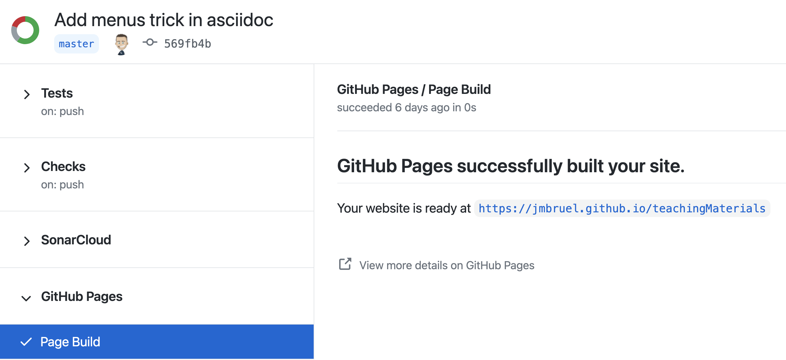
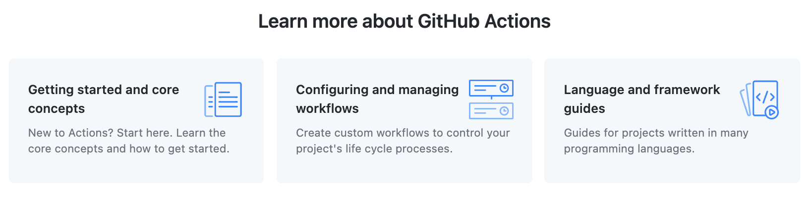
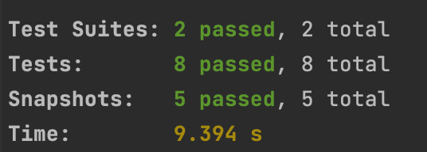
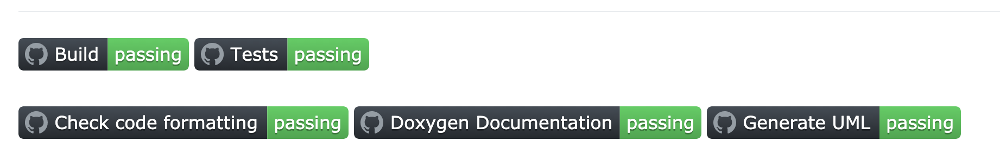
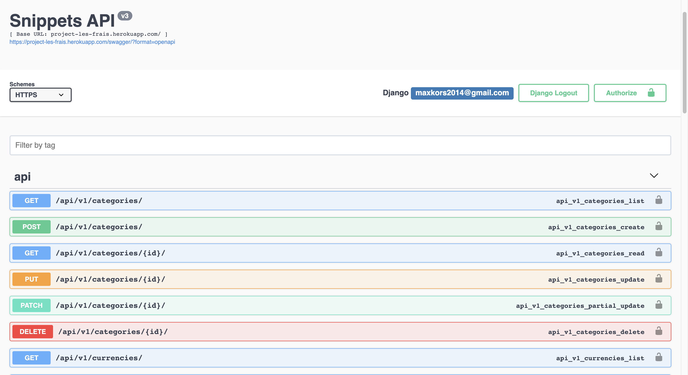
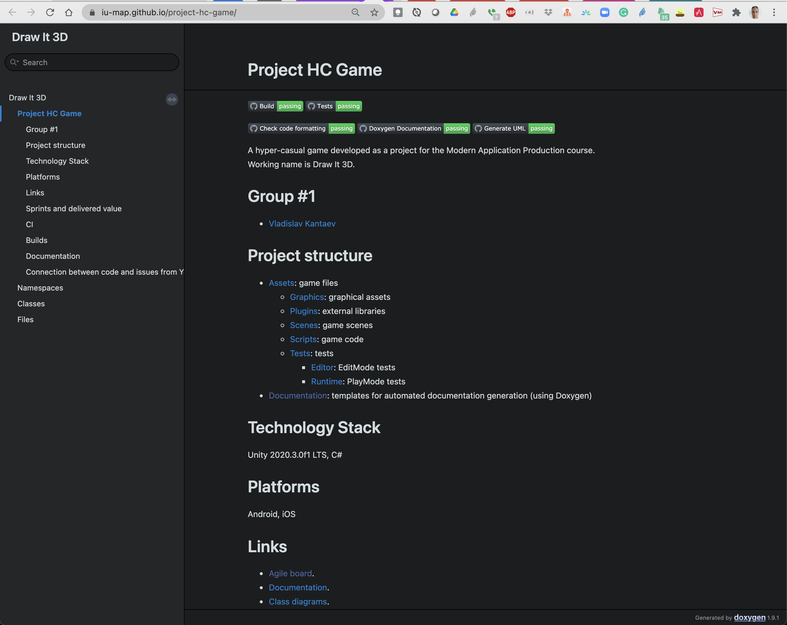

1. What for?
1.1. Continuous code verification

Figure 1. Traced and visible results
1.2. Environment
-
Jenkins (previously Hudson)
| Here is a complete list: https://github.com/ligurio/awesome-ci, and here is a comparison: Wikipedia |
1.3. eXtreme Programming
Continuous Integration is a software development practice where members of a team integrate their work frequently, […] leading to multiple integrations per day.
— Martin Fowler
1.4. Principles

Figure 2. Typical architecture (e.g., github-travis)

Figure 3. Architecture GitLab-CI (https://about.gitlab.com/gitlab-ci/)
1.5. YAML
YAML: YAML Ain’t Markup Language
Example of
.yml file---
receipt: Oz-Ware Purchase Invoice
date: 2012-08-06
customer:
first_name: Dorothy
family_name: Gale
| Use spaces but not tabs. |
1.6. Usage
-
Compile source code ⇒ build
-
Execute tests suites (Junit, Audit de code source, test IHM, …)
-
Create archives
-
Do some git operations (pull, checkout, push)
-
Deploy code on a production machine
-
Notify results (mail, RSS)
-
etc.
2. Concrete illustration (GitHub)
2.1. Processus type
-
Add some specific files at a specific place
-
Describe what needs to be done in those files
-
"push" in the repo
-
Check results
2.2. Example (this repo: page generation, source: here)
name: Jekyll site CI (1)
on: (2)
push:
branches: [ master ]
pull_request:
branches: [ master ]
jobs:
build:
runs-on: ubuntu-latest (3)
steps:
- uses: actions/checkout@v2
- name: Build the site in the jekyll/builder container
run: | (4)
docker run \
-v ${{ github.workspace }}:/srv/jekyll -v ${{ github.workspace }}/_site:/srv/jekyll/_site \
jekyll/builder:latest /bin/bash -c "chmod 777 /srv/jekyll && jekyll build --future"
| 1 | Name of the CI (to ckech on github) |
| 2 | Specification of which branches are concerned |
| 3 | Name of the "runner" (virtual machine) |
| 4 | Instructions (here running jekyll pages generation) |

Figure 4. Result from previous script
2.3. Danger Zone
image: node:4.2.2 all_tests: script: - npm install express --save - node ./myapp.js

Figure 5. Non terminating script
2.4. Solution
Here is a correct .gitlab-ci.yml (executing tests):
- npm install express --save - node ./specs/start.js ./specs/async.spec.js

Figure 6. Build success
3. HelloWorld example
-
Java Code
-
Main to test
-
Manual Compilation
-
ant Build
-
Improvements
-
Tests
-
Eclipse
-
Continue Integration
3.1. Java code
src/HelloWorld.java
package org.jmb;
public class HelloWorld
{
private String name = "";
public String getName()
{
return name;
}
public String getMessage()
{
if (name == "")
{
return "Hello!";
}
else
{
return "Hello " + name + "!";
}
}
public void setName(String name)
{
this.name = name;
}
}3.2. Testing with a main
src/Main.java
package org.jmb;
public class Main {
public static void main(String[] args) {
org.jmb.HelloWorld h = new org.jmb.HelloWorld();
h.setName("JMB");
System.out.println(h.getMessage());
}
}3.3. Manual compilation
$ javac -sourcepath src -d bin/ src/Main.java
$ ls bin
HelloWorld.class Main.class
$ java -cp bin Main
Hello JMB!3.4. Ant build
build.xml
<project>
<target name="clean">
<delete dir="bin"/>
</target>
<target name="build">
<mkdir dir="bin"/>
<javac srcdir="src" destdir="bin"/>
</target>
<target name="jar">
<mkdir dir="bin/jar"/>
<jar destfile="bin/jar/HelloWorld.jar" basedir="bin">
<manifest>
<attribute name="Main-Class" value="Main"/>
</manifest>
</jar>
</target>
<target name="run">
<java jar="bin/jar/HelloWorld.jar" fork="true"/>
</target>
</project>3.5. Manual build
$ ant clean build jar
$ ant run
Buildfile: /Users/bruel/HelloWorld/build.xml
run:
[java] Hello JMB!
BUILD SUCCESSFUL
Total time: 0 seconds3.6. Improvements
build.xml (improved)
<project name="HelloWorld" basedir="." default="main">
<property name="src.dir" value="src"/>
<property name="build.dir" value="bin"/>
<property name="classes.dir" value="${build.dir}/classes"/>
<property name="jar.dir" value="${build.dir}/jar"/>
<property name="main-class" value="Main"/>
<target name="clean">
<delete dir="${build.dir}"/>
</target>
<target name="compile">
<mkdir dir="${classes.dir}"/>
<javac srcdir="${src.dir}" destdir="${classes.dir}"/>
</target>
<target name="jar" depends="compile">
<mkdir dir="${jar.dir}"/>
<jar destfile="${jar.dir}/${ant.project.name}.jar" basedir="${classes.dir}">
<manifest>
<attribute name="Main-Class" value="${main-class}"/>
</manifest>
</jar>
</target>
<target name="run" depends="jar">
<java jar="${jar.dir}/${ant.project.name}.jar" fork="true"/>
</target>
<target name="clean-build" depends="clean,jar"/>
<target name="main" depends="clean,run"/>
</project>3.7. Manual build (improved)
$ ant
Buildfile: /Users/bruel/HelloWorld/build.xml
clean:
[delete] Deleting directory /Users/bruel/HelloWorld/bin
compile:
[mkdir] Created dir: /Users/bruel/HelloWorld/bin/classes
[javac] Compiling 2 source files to /Users/bruel/HelloWorld/bin/classes
jar:
[mkdir] Created dir: /Users/bruel/HelloWorld/bin/jar
[jar] Building jar: /Users/bruel/HelloWorld/bin/jar/HelloWorld.jar
run:
[java] Hello JMB!
main:
BUILD SUCCESSFUL
Total time: 1 second3.8. Tests
src/TestHelloWorld.java (failing)
package org.jmb;
public class TestHelloWorld extends junit.framework.TestCase {
public void testNothing() {
}
public void testWillAlwaysFail() {
fail("An error message");
}
}build.xml (librairies extérieures)
<project name="HelloWorld" basedir="." default="main">
<property name="src.dir" value="src"/>
<property name="build.dir" value="bin"/>
<property name="classes.dir" value="${build.dir}/classes"/>
<property name="jar.dir" value="${build.dir}/jar"/>
<property name="main-class" value="Main"/>
<property name="lib.dir" value="lib"/>
<path id="classpath">
<fileset dir="${lib.dir}" includes="**/*.jar"/>
</path>
<target name="clean">
<delete dir="${build.dir}"/>
</target>
<target name="compile">
<mkdir dir="${classes.dir}"/>
<javac srcdir="${src.dir}" destdir="${classes.dir}" classpathref="classpath"/>
</target>
<target name="jar" depends="compile">
<mkdir dir="${jar.dir}"/>
<jar destfile="${jar.dir}/${ant.project.name}.jar" basedir="${classes.dir}">
<manifest>
<attribute name="Main-Class" value="${main-class}"/>
</manifest>
</jar>
</target>
<path id="application" location="${jar.dir}/${ant.project.name}.jar"/>
<target name="run" depends="jar">
<java fork="true" classname="${main-class}">
<classpath>
<path refid="classpath"/>
<path refid="application"/>
<path location="${jar.dir}/${ant.project.name}.jar"/>
</classpath>
</java>
</target>
<target name="junit" depends="jar">
<junit printsummary="yes">
<classpath>
<path refid="classpath"/>
<path refid="application"/>
</classpath>
<batchtest fork="yes">
<fileset dir="${src.dir}" includes="TestHelloWorld.java"/>
</batchtest>
</junit>
</target>
<target name="clean-build" depends="clean,jar"/>
<target name="main" depends="clean,run"/>
</project>3.9. Manual build (again)
$ ant junit
Buildfile: /Users/bruel/HelloWorld/build.xml
compile:
jar:
junit:
[junit] Running TestHelloWorld
[junit] Tests run: 2, Failures: 1, Errors: 0, Skipped: 0, Time elapsed: 0,003 sec
[junit] Test TestHelloWorld FAILED
BUILD SUCCESSFUL
Total time: 1 secondsrc/TestHelloWorld.java
package org.jmb;
import static org.junit.Assert.*;
import org.junit.Before;
import org.junit.Test;
public class TestHelloWorldReal {
private org.jmb.HelloWorld h;
@Before
public void setUp() throws Exception
{
h = new org.jmb.HelloWorld();
}
@Test
public void testHelloEmpty()
{
assertEquals(h.getName(),"");
assertEquals(h.getMessage(),"Hello!");
}
@Test
public void testHelloWorld()
{
h.setName("World");
assertEquals(h.getName(),"World");
assertEquals(h.getMessage(),"Hello World!");
}
}

Figure 7. Test under eclipse
|
Do not hesitate to use the infinitest plugin. 
Figure 8. Infinitest plugin
|
3.10. Eclipse

Figure 9. Export with eclipse
build.xml (export from eclipse)
<?xml version="1.0" encoding="UTF-8" standalone="no"?>
<!-- WARNING: Eclipse auto-generated file.
Any modifications will be overwritten.
To include a user specific buildfile here, simply create one in the same
directory with the processing instruction <?eclipse.ant.import?>
as the first entry and export the buildfile again. --><project basedir="." default="build" name="HelloWorld">
<property environment="env"/>
<property name="junit.output.dir" value="junit"/>
<property name="debuglevel" value="source,lines,vars"/>
<property name="target" value="1.8"/>
<property name="source" value="1.8"/>
<path id="JUnit 4.libraryclasspath">
<pathelement location="../../../.p2/pool/plugins/org.junit_4.12.0.v201504281640/junit.jar"/>
<pathelement location="../../../.p2/pool/plugins/org.hamcrest.core_1.3.0.v201303031735.jar"/>
</path>
<path id="HelloWorld.classpath">
<pathelement location="bin"/>
<path refid="JUnit 4.libraryclasspath"/>
</path>
<target name="init">
<mkdir dir="bin"/>
<copy includeemptydirs="false" todir="bin">
<fileset dir="src">
<exclude name="**/*.launch"/>
<exclude name="**/*.java"/>
</fileset>
</copy>
</target>
<target name="clean">
<delete dir="bin"/>
</target>
<target depends="clean" name="cleanall"/>
<target depends="build-subprojects,build-project" name="build"/>
<target name="build-subprojects"/>
<target depends="init" name="build-project">
<echo message="${ant.project.name}: ${ant.file}"/>
<javac debug="true" debuglevel="${debuglevel}" destdir="bin" includeantruntime="false" source="${source}" target="${target}">
<src path="src"/>
<classpath refid="HelloWorld.classpath"/>
</javac>
</target>
<target description="Build all projects which reference this project. Useful to propagate changes." name="build-refprojects"/>
<target name="Main">
<java classname="org.jmb.Main" failonerror="true" fork="yes">
<classpath refid="HelloWorld.classpath"/>
</java>
</target>
<target name="TestHelloWorld">
<mkdir dir="${junit.output.dir}"/>
<junit fork="yes" printsummary="withOutAndErr">
<formatter type="xml"/>
<test name="org.jmb.TestHelloWorld" todir="${junit.output.dir}"/>
<jvmarg line="-ea"/>
<classpath refid="HelloWorld.classpath"/>
</junit>
</target>
<target name="junitreport">
<junitreport todir="${junit.output.dir}">
<fileset dir="${junit.output.dir}">
<include name="TEST-*.xml"/>
</fileset>
<report format="frames" todir="${junit.output.dir}"/>
</junitreport>
</target>
</project>
Figure 10. Run ant with eclipse
Another advantage of junit web doc generation (junit repo, open the index.html file).

Figure 11. Testing results
3.11. Continue Integration
!.gitlab-ci.yml (added on a GitLab project)
image: asciidoctor/docker-asciidoctor
variables:
GIT_SSL_NO_VERIFY: "1"
stages:
- 📦build
- 🦄test
html:
stage: 📦build
script:
- asciidoctor README.adoc -o index.html
artifacts:
paths:
- index.html
pdf_preview:
stage: 🦄test
when: manual
environment:
name: preview/$CI_COMMIT_REF_NAME
except:
- /master/
artifacts:
paths:
- README.pdf
expire_in: 1 week
script:
- asciidoctor-pdf README.adoc
The build.xml might have to be updated because sometimes too linked to Eclipse.
|
4. Tips
4.1. How NOT to run CI
git commit -m "Blabla... [ci skip]"
5. GitHub CI = Actions
5.1. Click and install

Figure 13. Choose your weapon
5.2. Lots of help and documentation

Figure 14. Tune your actions
5.3. Where to check/tune?
.github/workflows/
6. 2021 (awesome!) examples

├── build.yml (1) ├── doxygen.yml (2) ├── linter.yml (3) ├── tests.yml (4) └── uml.yml (5)
| 1 | Build the app |
| 2 | Generate documentation |
| 3 | Check code quality |
| 4 | Launch tests |
| 5 | Generate UML diagrams from code |

Figure 15. Tests through CI

Figure 16. Easy results checking through badges

Figure 17. API documentation generation using Swagger

Figure 18. GitHub pages generation